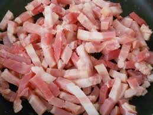

Aquesta és la meva recepta preferida. És fàcil, ràpida i deliciosa. Acompanya't d'una mica de pam de julivert i gaudeix!
Posa a bullir aigua amb una mica de sal en una olla gran. Quan comenci a bullir, afegeix els espaguetis i cuina'ls segons les instruccions del paquet (normalment 8-10 minuts).
Mentre es couen els espaguetis, talla la panceta en trossos petits i fregiu-la en una paella fins que estigui cruixent. Reserva.
En un bol, barreja els ous amb el formatge parmesà ratllat. Afegeix una mica de pebre negre.
Quan els espaguetis estiguin cuits, escorre'ls i afegeix-los a la paella amb la panceta. Apaga el foc i afegeix la barreja d'ous i formatge. Remou bé fins que quedi una salsa cremosa.
Serveix els espaguetis en un plat i afegeix una mica de julivert fresc per decorar. Gaudeix de la teva carbonara!